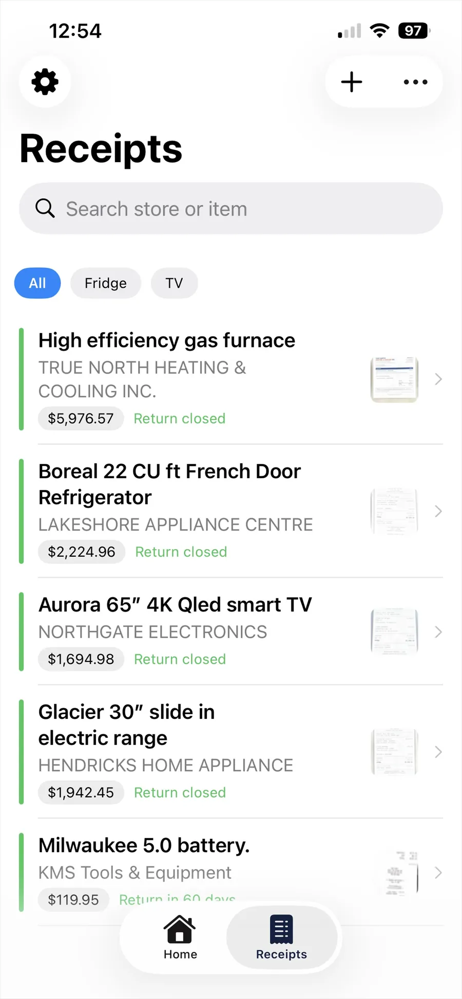
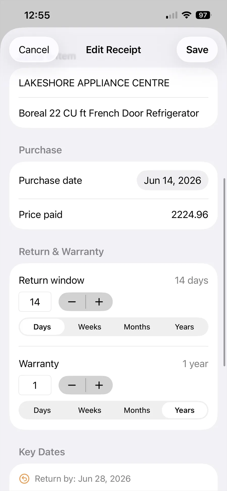
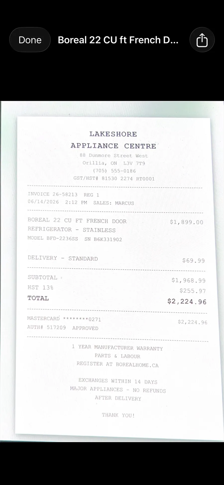
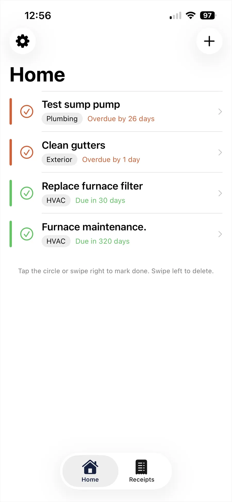
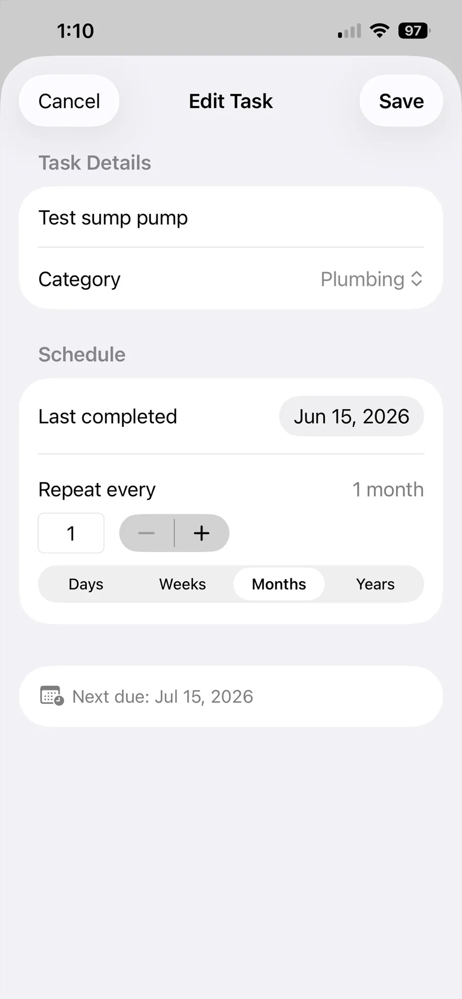
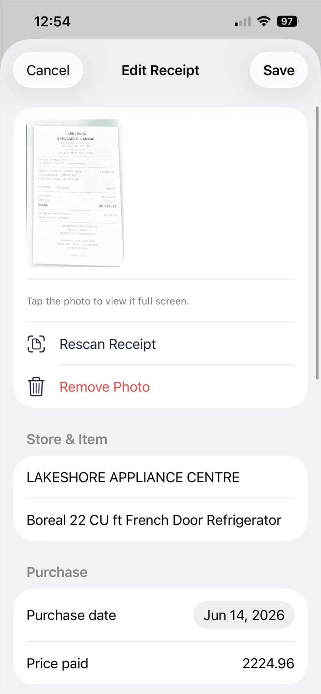

Never miss a return window or warranty again.
Keepit is two trackers in one iPhone and iPad app: a place to keep receipts with their return and warranty dates, and a simple checklist for the home jobs that are easy to forget. It reminds you before each deadline — and everything stays in your own iCloud.

What Keepit keeps track of
Two things every homeowner loses track of, in one app that does not need a spreadsheet, a shoebox, or a subscription.
Receipts that read themselves
Photograph a receipt and Keepit pulls out the store, date and total automatically using on-device text recognition. No typing, no upload.
Return windows
Set the return period once — 14 days, 30 days, 90 days — and Keepit tells you before it closes, while you can still take the thing back.
Warranty expiry
Track a one-year or five-year warranty alongside the receipt that proves it. When something breaks, the proof of purchase is right there.
Recurring home tasks
Furnace filters, smoke alarm batteries, gutters, water heater flushes. Set the interval and the countdown restarts every time you mark it done.
Reminders that arrive in time
Notifications the day before and the day of each deadline, so a warranty never quietly expires in the background.
Backed up to your iCloud
Lose your phone and nothing is lost. Install Keepit on the new one, sign in, and every receipt comes back.
A look inside
Built to be quick — most things take one photo and two taps.





Your receipts are nobody else's business
Receipts say a lot about a person — what you earn, what you buy, where you shop. That is exactly why Keepit was built without a server to put them on.
There is no Keepit account, because there is no Keepit database. Your receipts and tasks live on your device and sync through your own private iCloud, the same way your Photos do. We have no copy and no way to get one.
Receipt scanning happens on your device. The text recognition that reads the store name and total runs locally on your iPhone or iPad. Receipt images are never uploaded anywhere.
No ads and no advertising trackers. Nothing about what you buy is sold, shared, or profiled.
Buy it once, or don't buy it at all
A tracker you check a few times a month should not cost you every month. Keepit is a one-time purchase — there is no subscription.
- Up to 5 receipts
- Up to 5 home tasks
- Automatic receipt scanning
- Return & warranty reminders
- iCloud backup and sync
- Unlimited receipts
- Unlimited home tasks
- Everything in Free
- Works on iPhone and iPad
- Family Sharing included — one purchase covers your household
- All future updates included
- Restores free on your other devices
Requires iPhone or iPad with iOS 26 or later. Price shown in Canadian dollars; the App Store will show your local price.
Common questions
Where is my data stored?
On your iPhone or iPad and in your own private iCloud account. Keepit has no servers and no accounts, so nobody else — including us — can see your receipts or tasks.
Does Keepit work without an internet connection?
Yes. Everything is stored on your device first. iCloud sync and backup happen whenever you are back online.
How much does Keepit cost?
Keepit is free for up to 5 receipts and 5 home tasks. Keepit Pro removes both limits for a single one-time purchase of $4.99 CAD. There is no subscription and no recurring charge.
Does Keepit read my receipts automatically?
Yes. Photograph a receipt and Keepit uses on-device text recognition to pull out the store name, date and total. The scanning happens entirely on your device — no image is ever uploaded. You can always correct anything it gets wrong.
What happens to my data if I get a new phone?
Install Keepit and sign in to the same Apple Account. Your receipts and tasks sync back down from iCloud automatically within a few minutes.
Is there an iPad or Android version?
Yes on iPad — Keepit runs natively there, with layouts built for the larger screen rather than a stretched phone view. One purchase of Keepit Pro covers both your iPhone and iPad. There is no Android version planned — Keepit relies on iCloud and Apple's on-device text recognition to keep your data private.
Does Keepit Pro support Family Sharing?
Yes. Once one person in your Family Sharing group buys Keepit Pro, everyone else in the group gets it too, at no extra cost. Turn it on in Settings → your name → Family Sharing → Purchase Sharing. Everyone's receipts and tasks stay private in their own iCloud — only the purchase is shared.
More answers, plus how to reach a human, on the support page.